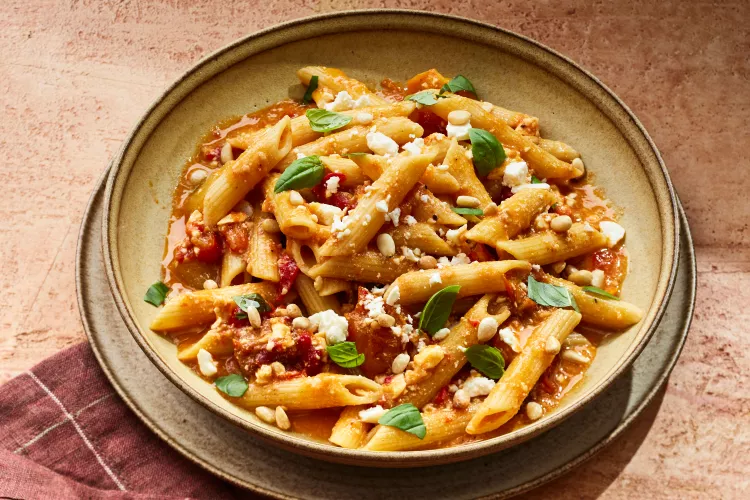

Home
Feta Tomato Pasta

Description
We might be late to this trend, but we’ve taken our time to perfect this viral baked pasta dish. One of the keys to ensuring the sauce for this feta tomato pasta comes together nicely is to use a high-quality block of feta—the pre-crumbled stuff won’t bake and melt the same. (Publix brand imported Greek feta is a great pick at a great price point.)
For a Southern spin, you can throw in pimientos with the tomatoes, which dissolve into the sauce at the high cooking temperature. Rounding out the sweetness of the peppers is some lemon zest for brightness, and a sprinkle of toasted pine nuts for nice pops of crunch.
Ingredients
- 2 pints cherry or grape tomatoes
- 2 (4-oz.) jars sliced pimiento peppers, drained (about 1 cup) (optional)
- 6 garlic cloves, smashed and peeled
- 5 Tbsp. olive oil, divided
- 1 1/2 tsp. kosher salt, plus more for water
- 1/2 tsp. black pepper
- 1 (8-oz.) block feta cheese
- 1 (16-oz.) pkg. penne pasta
- 1/4 cup sliced fresh basil, plus more for garnish
- 1 tsp. grated lemon zest (from 1 lemon)
- Toasted pine nuts (optional)
Steps
- Preheat oven to 450°F. Place tomatoes, pimientos, and garlic in a 13- x 9-inch baking dish. Drizzle with 4 tablespoons olive oil; sprinkle with salt and pepper, stirring to combine. Cut a 1/2-inch slice from feta; crumble and reserve for garnish. Nestle remaining feta block in center of baking dish. Drizzle with remaining 1 tablespoon oil, turning to coat feta on all sides.
- Bake until tomatoes burst and begin to brown slightly, 20 to 25 minutes.
- Meanwhile, bring a large pot of salted water to a boil over high. Add pasta; cook according to package directions for al dente. Reserve 1/2 cup cooking water; drain pasta.
- Stir in drained pasta, basil, and lemon zest until coated, adding the remaining 1/4 cup cooking water (about 1 tablespoon at a time) to loosen sauce as needed.
- Serve topped with additional basil and reserved feta; garnish with toasted pine nuts, if using.